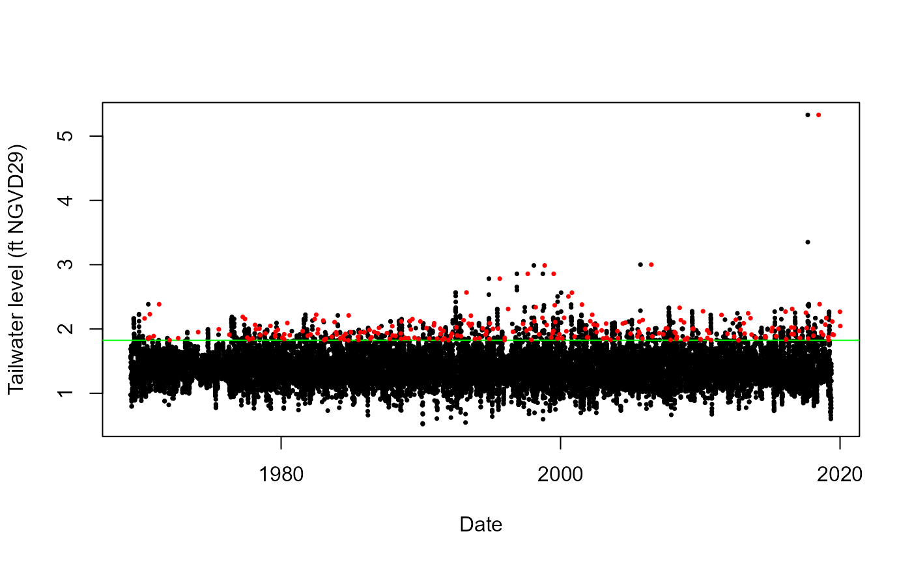

Declusters a time series
Decluster.RdIdentify cluster maxima above a threshold, using the runs method of Smith and Weissman (1994).
Arguments
- Data
Numeric vector of the time series.
- u
Numeric vector of length one specifying the declustering threshold; as a quantile
[0,1]ofDatavector. Default is0.95.- Thres
Threshold expressed on the original scale of the observations. Only one of
uandThresshould be supplied. Default isNA.- SepCrit
Integer; specifying the separation criterion under which events are declustered. Default is
3corresponding to a storm window of three days in the case of daily data.- mu
(average) occurrence frequency of events in
Data. Numeric vector of length one. Default is365.25, daily data.
Value
List comprising the Threshold above which cluster maxima are identified, rate of cluster maxima Rate, a vector containing the original time series Detrended and the Declustered series.
Examples
#Declustering tailwater time series at structure S20
S20T_decl = Decluster(Data=S20_T_MAX_Daily_Completed_Detrend_Declustered$Detrend)
#Plotting detrended data
plot(as.Date(S20_T_MAX_Daily_Completed_Detrend_Declustered$Date),
S20_T_MAX_Daily_Completed_Detrend_Declustered$Detrend,
xlab="Date",ylab="Tailwater level (ft NGVD29)",pch=16,cex=0.5)
#Declustering threshold
abline(h=quantile(S20_T_MAX_Daily_Completed_Detrend_Declustered$Detrend,0.95), col="green")
#Cluster maxima
points(S20_T_MAX_Daily_Completed_Detrend_Declustered$Date[S20T_decl$EventsMax],
S20_T_MAX_Daily_Completed_Detrend_Declustered$Detrend[S20T_decl$EventsMax],
col="red",pch=16,cex=0.5)
